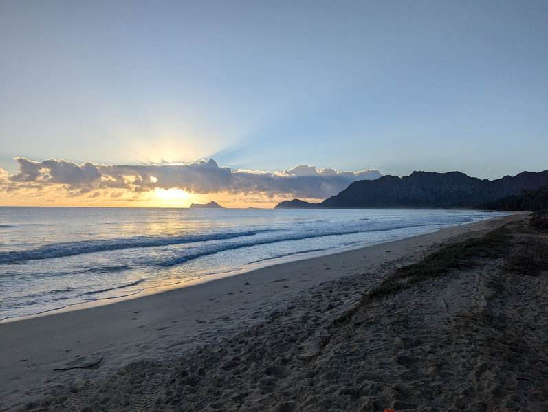
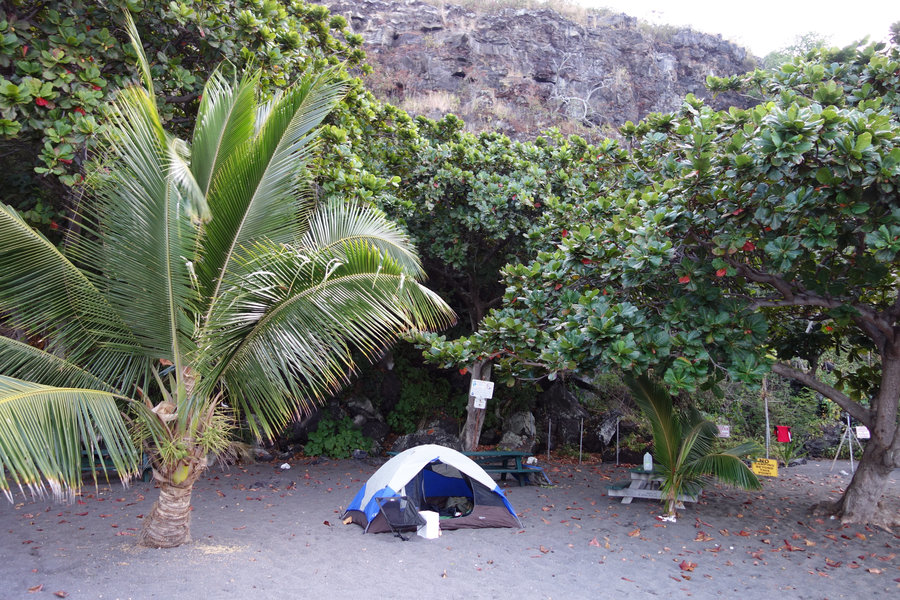
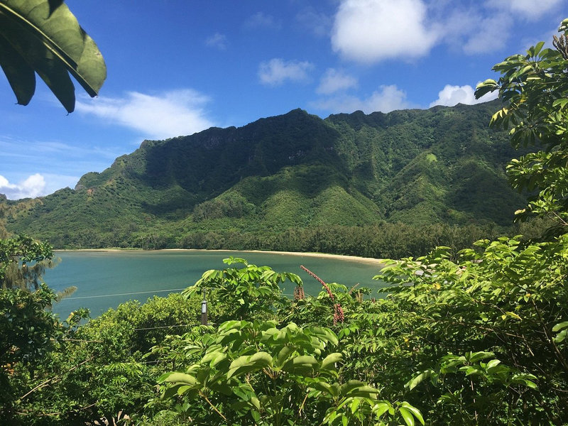

San Clemente State Beach
Blufftop ocean camping with beach access, showers, town support, and enough structure that the coast stays fun after sunset.
 By Chris Follin
By Chris FollinROUNDUP
Beach camping has a short grace period. The first view does a lot, then wind, sand, bathrooms, parking, permits, and shoreline access start deciding whether the trip still works. These are the coastal camps I would keep on the shortlist after the practical details have had their say.
The best beach camp is not always the wildest or the prettiest. It is the one where the water is easy to use, the site can survive the afternoon breeze, and the facilities are good enough that sand stays a nuisance instead of becoming the whole trip.
Blufftop ocean camping with beach access, showers, town support, and enough structure that the coast stays fun after sunset.

Wide sand, calmer water, and a relaxed open-beach feel, with the important caveat that permits and seasonal closures can control the whole plan.

Black-sand beach camping where reef water and place character are the reason to go; simple, humid, exposed, and worth treating with respect.

A windward Oahu valley-to-bay camp where beach time, cultural context, rain, mud, and respect for a living place all come together.
This is the table I would use before choosing a beach camp, because the prettiest shoreline can still be the wrong campsite.
| Camp | Best Use | Shore Access | Facilities | Exposure / Pressure | Why Choose It | Why Skip It |
|---|---|---|---|---|---|---|
| San Clemente State Beach | Southern California coastal weekend with comfort backup | Trail from blufftop campground down to the beach | Developed campground, showers, town nearby | Wind, campground density, reservation competition, uphill beach carry | You want the most forgiving beach-camp setup on this list | You need solitude or cannot handle the climb back from the sand |
| Bellows Field | Oahu beach day that turns into camp | Wide sand and easy water access | County permit campground; verify current closure windows before booking | Permit demand, turtle-related seasonal closures, sun and wind exposure | You want open sand, swimming, and a relaxed all-day hang | Your dates are inflexible or you need guaranteed year-round availability |
| Hoʻokena Beach Park | Big Island water-focused camp | Beachfront setting with reef/snorkel appeal when conditions fit | Permit camping through the Hoʻokena program; simple park facilities | Heat, humidity, ocean conditions, limited infrastructure, local-use pressure | The water and black-sand setting are the whole point | You want a polished resort-like campground or a low-awareness tourist stop |
| Ahupuaʻa ʻO Kahana | Windward Oahu valley-to-bay camp with cultural context | Kahana Bay setting inside a living ahupuaʻa | State park permit camping; basic beach/park facilities | Rain, mud, mosquitoes, permit rules, and a place that asks for respect | You want the beach connected to a larger landscape and story | You only want a simple swim-and-sun beach campground |
Beach camp pays off when the shoreline is part of the day, not a technicality.
SAN CLEMENTE
Choose: you want showers, town support, sunsets, and a developed campground that makes the coast easy. Skip: you need quiet, isolation, or a flat walk from camp to sand.
BELLOWS FIELD
Choose: open sand and mellow water are the main plan, and you can work around permit and closure windows. Skip: your dates are fixed or you need lots of shade.
HOʻOKENA
Choose: you are prepared for a simple beach-park setup and want reef water, black sand, and a distinct Big Island feel. Skip: you need a polished campground or easy climate control.
KAHANA
Choose: the valley, bay, trails, and cultural landscape matter to the trip. Skip: rain, mud, mosquitoes, or permit rules will make the group resent the plan.